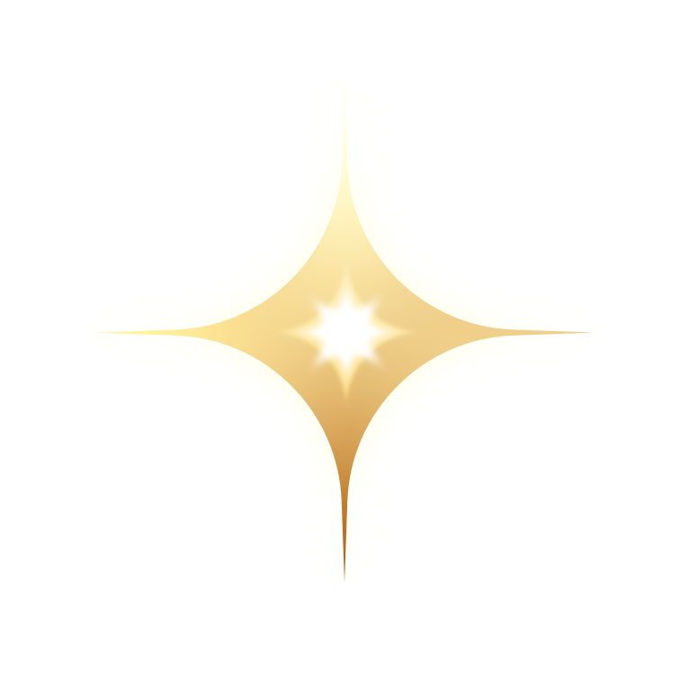

Quiromancia AI
✦ Tradición ancestral impulsada por Inteligencia Artificial ✦
✦ Tocar para iniciar ✦
Divergency
Quiromancia AI
Elige la voz de tu oráculo. Luego capturaremos la palma de tu mano para comenzar la lectura.
Modelo experimental · Solo para entretenimiento
Antes de empezar
Cuéntame de ti
Solo lo esencial para personalizar tu lectura.
📩 Los usamos para enviarte tu predicción personalizada.
Escaneo
Muéstrame tu palma
Encuadra la palma de tu mano y escanea
Leyendo las líneas
Analizando
Subiendo la imagen de tu palma
Divergency · Tu lectura
Oráculo
✦ Toca una caja del croquis para resaltar su línea.